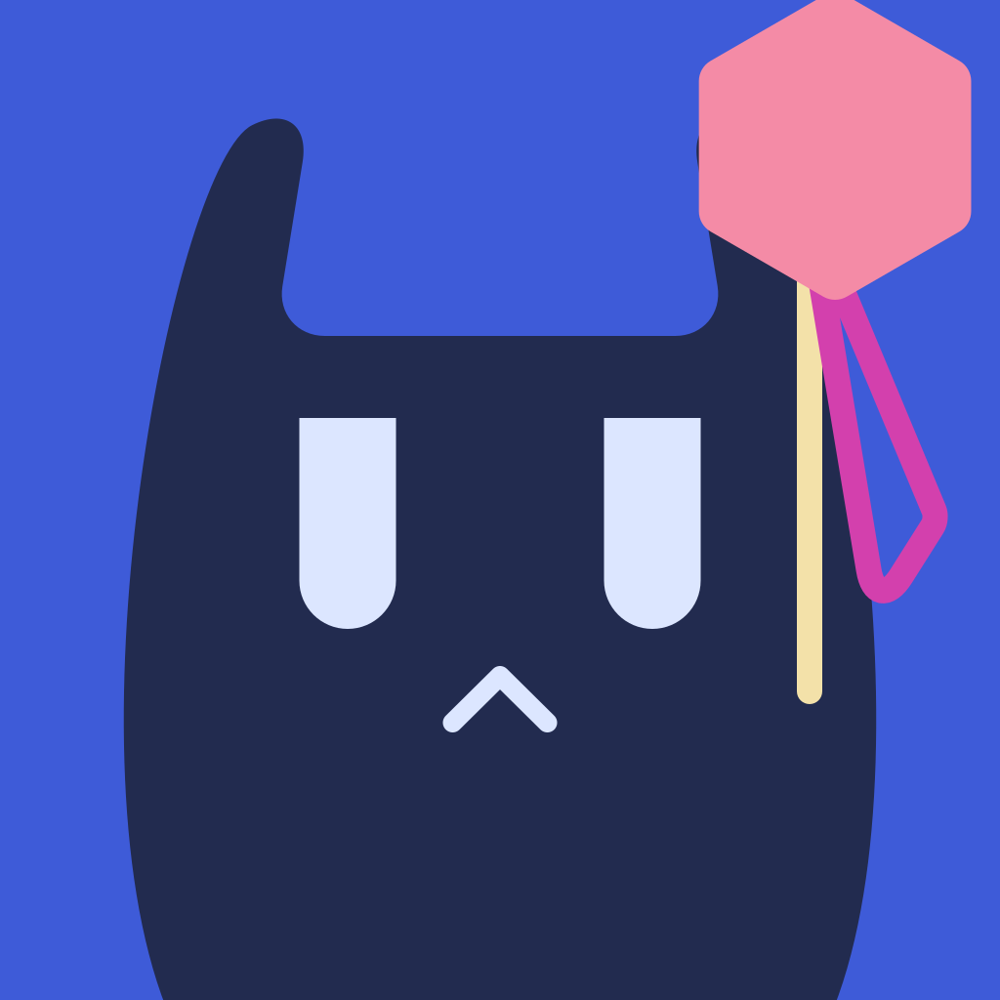
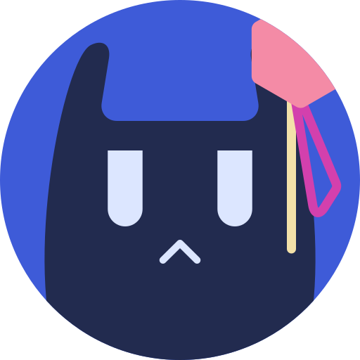
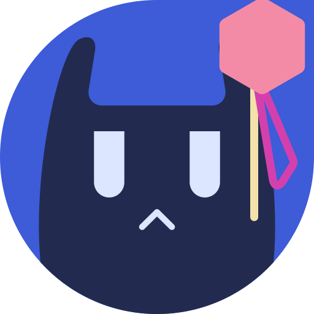
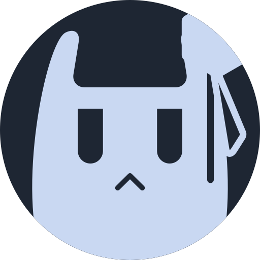

Erika 图标
蓝发齐刘海的猫耳女孩。蓝色的圆是头发，深色剪影是脸，同时也是一只猫：两只猫耳之间那道平直的边就是齐刘海。右耳歪戴一顶缎带粉的小帽（颜色取自原作绘梨花头饰的缎带），帽下垂着两根发带，米黄的竖发绳和品红的蝴蝶结圈。开发框架 Bern 的图标是黑猫和蓝发女孩，Erika 是 Bernkastel 的棋子，所以两个图标是一对。作者亲自设计，在图标工坊里完成。
主 logo
对外展示用：README、官网、关于页、欢迎页。圆形，帽子不裁切、完整地伸出圆外，背景透明。
出场动画
和标题字一样，动画写在 SVG 文件里（纯 CSS），放进 <img> 和 GitHub README 都会播放，播一次就停在最后一帧，和静态 logo 完全一样；系统开了「减少动态效果」时直接显示静态图。用在 README、关于页和首次启动的欢迎页。出场之后双击 logo，会随机做一个小动作（连续两次不重复）。
- 0.00s 头发的圆「啵」地弹出来，带果冻回弹
- 0.30s 猫头从底下蹦上来，落地压扁再弹回
- 0.75s 两只眼睛先后弹开，0.95s「^」嘴冒出来
- 1.00s 米黄竖发绳从上往下展开；品红蝴蝶结圈绕着顶点像钟摆一样晃几下
- 1.15s 帽子转着从天上掉下来，落在耳朵上压扁、回弹、摆正
- 1.55s 帽子周围闪三颗圆角小星星，随后淡出
- 2.05s 眨一下眼，全程约 2.3s
双击的小动作
- wink：左眼眨成弧线，甩出一颗小星星，头往左歪（1.5s）
- 摸头：像猫一样被按住、左右蹭，眼睛眯成「︶」，嘴变成「ω」，脸红，头顶冒两颗小心心（2.6s）
- 坏笑：古户绘梨花的招牌表情，眼皮压成斜的半眯眼，眉头一皱，嘴角歪着笑，下巴一抬，帽子闪一下（2.8s）
文件：brand/erika-icon-animated.svg（同 erika-icon-export/logo/erika-logo-icon-animated.svg），由导出脚本生成。双击的小动作靠 SVG 里的一小段脚本，要用 <object> 嵌入或直接打开才有；放进 <img>（比如 README）时只播出场动画。App 里用原生控件实现时照这三个动作做。
各平台
应用图标由各系统按自己的形状裁切，帽子伸出圆外的那一角会被切掉。安卓主题图标和 iOS 着色图标用单色层，系统按壁纸重新上色。

iOS
安卓 · 圆形
安卓 · 水滴
安卓主题图标 · 深色单色
没有背景，纯黑或纯白。头发只留圆的轮廓环，帽子四周留一道缝，和圆环、耳朵分开；眼睛、嘴和竖发绳挖空，被帽子和蝴蝶结圈盖住的地方保持实心。用于水印、系统托盘和单色印刷。安卓主题图标和 iOS 着色图标由系统按自己的形状裁切，那里的单色层不画圆环。
文件
全部由 brand/erika-icon-export/build.py 从图标工坊的两个快照生成，目录说明在 brand/erika-icon-export/README.md。主 logo：brand/erika-icon.svg（同 erika-icon-export/logo/）；macOS macos/Erika.icns；Windows windows/erika.ico；iOS ios/AppIcon.appiconset；安卓 android/res/；鸿蒙 harmonyos/；Linux linux/hicolor/；网页 web/；单色 svg/erika-mono-*.svg。设计改了以后，在工坊里重新保存快照，再运行一次 build.py。
早期草稿：第一版
下面是图标定稿前的四个方向（放大镜、钥匙孔、真相、画框），没有采用，保留作记录。
关键词：极简、纯色、图形、侦探、播放器，颜色用蓝、米白和玫瑰红。每个方向只用两三个几何形，没有渐变和高光；蓝色就是标题字的绀青，图标和 ERIKA 同色。玫瑰红只占最小的一块，像推理里那条关键的线索，也对应「红色真实」和「蓝色真实」。
当时的推荐：A 放大镜播放键
镜片里放一个播放三角，镜圈右下伸出一截短而粗的柄。播放键本身就是放大镜，一个形状同时读作「播放」和「侦探」。也可以理解为 Erika 会推理出你在看哪部番、第几集。柄做得短粗、三角做得大，第一眼先看到的是播放键，不像搜索工具。
四个方向
每个方向都有米白底、蓝底两个版本，以及小尺寸和单色剪影。单色剪影给 Android 主题图标、iOS 着色图标和系统托盘用，所以图形只用一种颜色也必须成立。
放在主屏和程序坞上
灰色方块是占位，代表别的应用。右下是图标加标题字的组合，用在 README 顶部和关于页。
落地时
三层
每个图标都能拆成三层：底、主体、线索。苹果平台按这三层在 Icon Composer 里组装成液态玻璃图标；只给线索层开玻璃，最克制。
Android
自适应图标的安全区是中间直径约 61% 的圆，主体图形要缩进去一点；单色主题图标直接用剪影。
深色模式
深色外观就是蓝底版：米白和蓝互换，玫瑰红稍微提亮一档（#EC4470），在蓝底上才够醒目。
文件：brand/erika-icon/lens.svg（A）、keyhole.svg（B）、truth.svg（C）、frame.svg（D），1024 满版方形，默认是米白底；蓝底和单色由这一页的 CSS 换色，定稿后再分别导出。这一页 brand/erika-icon.html。